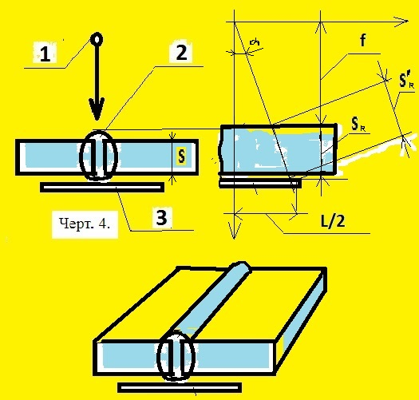

чувствительность, класс : Выбрать 1, 2 или 3
рад.толщина шва Sрад, мм : Указать s, (не более 400мм)
длина пленки L, мм : Выбрать L, мм
фокусное пятно Ф, мм : Выбрать Фmax не более 5 мм
Программа для данной схемы написана в "живом формате" в отличие от предыдущих схем.Оцените:
4.9. При выборе схемы и направления излучения следует учитывать:
- угол между направлением излучения и нормалью к радиографической
пленке в пределах контролируемого за одну экспозицию участка свар-
ного соединения должен быть минимальным и в любом случае не превы-
шать 45°.
5.1. Расстояние от источника излучения до ближайшей к источнику
поверхности контролируемого участка сварного соединения и
размеры или количество контролируемых за одну экспозицию участ-
ков для схемы 4 просвечивания следует выбирать такими, чтобы
при просвечивании выполнялись следующие требования:
относительное увеличение размеров изображений дефектов, располо-
женных со стороны источника излучения (по отношению к дефектам,
расположенным со стороны пленки), не должно превышать 1,25;
угол между направлением излучения и нормалью к пленке в пределах
контролируемого за одну экспозицию участка сварного соединения
не должен превышать 45°;
ПРИЛОЖЕНИЕ 4.1. Расстояние f от источника излучения до обращенной
к источнику поверхности контролируемого сварного соединения не
должно быть менее значений, определяемых по формулe
f >= Cs,
где С=2Ф/К при Ф/К >= 2 и С=4 при при Ф/К менее 2;
s - радиационная толщина, мм;
Ф - максимальный размер фокусного пятна источника излучения, мм;
K - требуемая чувствительность контроля, мм.
Примечание 2. Длина контролируемых за одну экспозицию участков
при контроле по схемам черт. 4 и 6 не должна быть более 0,8 f.